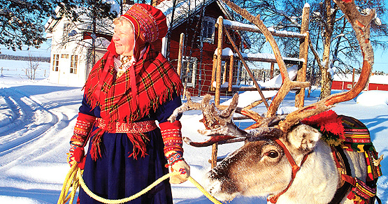
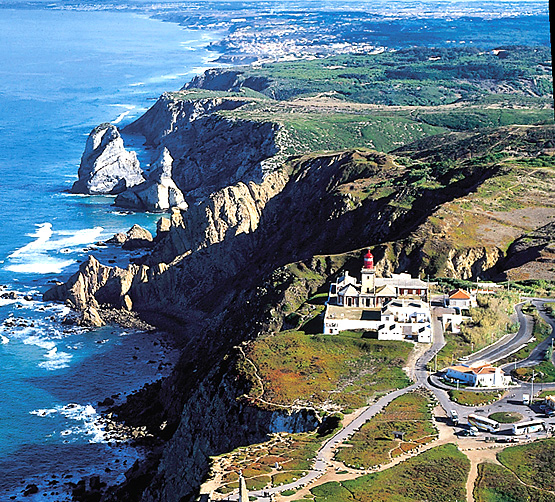

PORTO
O Porto é mais do que isto! Há tanta coisa ainda por ver…
…cidade que deu o nome a Portugal é um dos destinos turísticos mais antigos da Europa e Património Cultural da Humanidade desde 1996.
Porto - Compras...
O Porto é História e Tradição. Não deixe de conhecer alguns dos mais célebres espaços da cidade onde poderá adquirir os mais variados produtos.
NATAL no Porto!
No Natal, o Porto adquire um brilho especial.
FINLÂNDIA
Finlândia - Um Paraíso na Terra

A Finlândia é o sétimo maior país da Europa, com 338.144 Km2.
Santa Park - Lapónia...
No mundo branco da bonita Lapónia, num lugar onde os desejos querem tornar-se realidade, abre todos os anos, nas profundezas da Aldeia do Pai Natal, em Rovaniemi, o Santa Park.
Lapónia… Onde os Desejos se Tornam Realidade
Lapónia... Terra do Sol da Meia Noite, onde o céu do inverno permanece estrelado durante 3 meses e, o verão não vê a noite, mas sim a beleza de um pôr do sol infinito.
Snow Castle - Aventuras no mundo branco
Todos os anos, quando a temperatura atinge os 8º Celsius negativos, ergue-se em Kemi, na Finlândia, o majestoso Castelo do Gelo.
CASCAIS
Estoril Historic Festival F1 Classic
A Fórmula 1 está de volta à pista de corrida no Autódromo do Estoril com carros de corrida icónicos que rasparão o asfalto do Estoril na jornada final do histórico campeonato da FIA.
Herb Ritts - Exposição
Uma exposição inédita em Portugal de Herb Ritts mostra fotografias de vedetas de Hollywood, da música ou da moda das décadas de 80 e 90.
Christmas Village - Cascais
Em Cascais os sonhos acontecem, e o Cascais Christmas Village é o maior exemplo. Num universo mágico, pequenos e graúdos divertem-se nas diversas atividades e interagem com um mundo fantástico de duendes, renas e fantasia.
Rock’n’Roll Maratona de Lisboa EDP
Uma das maratonas com o cenário mais belo do mundo é uma viagem que começa na vila à beira-mar de Cascais, corre junto às margens do rio Tejo, atravessa locais de Património Mundial, e finalmente acaba nas encantadoras ruas de Lisboa.
ALENTEJO
Elvas - Forte da Graça
O Forte da Nossa Senhora da Graça está localizado a norte da cidade de Elvas, no Alentejo, e foi oficialmente denominado como Forte Conde de Lippe.
Elvas - Comboio Turístico
Em Elvas, em vários dias de semana e aos fins-de-semana e feriados, existe a possibilidade de se realizar um circuito turístico e cultural através do Comboio Turístico.
Elvas - Pista de Gelo
Espaço de lazer, polo de atração de visitantes, trazendo a Elvas milhares de pessoas.
Elvas - Iluminações
Atraindo muitos visitantes ao Centro Histórico, a cidade de Elvas volta a iluminar-se para receber a quadra natalícia. Mais um motivo para visitar e conhecer Elvas...
USA
USA - Natural Parks
47 itinerários, representando mais de 2.000 monumentos, oferecem a quem os visita um passado com vida: Caminhos com História.
GOLEGÃ
Feira Nacional do Cavalo
“Quando na Feira da Golegã passa um lavrador a guiar uma parelha, não é só a presunção marialva que ali vai. É ela, o par de bestas e a paisagem que desfilam diante de nós, numa conjugação perfeita do racional, do irracional e do natural.” - “Portugal” de Miguel Torga
SINTRA
Cabo da Roca

Cabo da Roca, o ponto mais ocidental do continente europeu, situado no extremo final da Serra de Sintra, é, sem dúvida, um dos locais mais emblemáticos de Portugal.
Feira das Mercês - The “Mercês Fair”
Esta feira tem como principal objetivo a reabilitação de uma das feiras mais emblemáticas do concelho, proporcionando aos visitantes vários momentos de animação etnográfica saloia, espaços de estauração, bancas de artesanato diversificado, área infantil e espetáculos de palco.
LEFFEST - LISBON & SINTRA FILM FESTIVAL
Um festival de cinema que se cruza com diferentes expressões artísticas - a literatura, a música, as artes plásticas e as artes do palco.
Reino de NATAL

No Parque da Liberdade encontra-se o “Reino de Natal”. Aqui os visitantes têm todos os motivos para se deixar inebriar pelo espírito natalício.